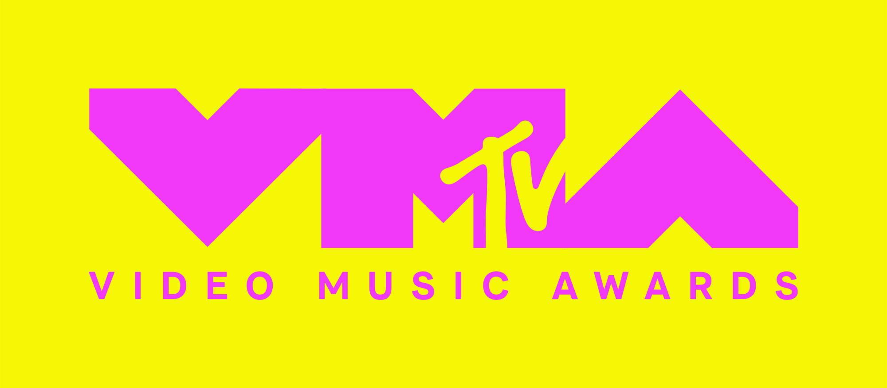

Indicados ao VMA de 2024
Evento que acontece em setembro teve a cantora Anitta indicada três vezes em duas categorias
Atualizados 3 minutos atrás
IMPORTANTES

Videoclipe do Ano
Ariana Grande — “We Can’t Be Friends (Wait For Your Love)”;
Billie Eilish — “Lunch”;
Doja Cat — “Paint The Town Red”;
Eminem — “Houdini”;
SZA — “Snooze”;
Taylor Swift ft. Post Malone — “Fortnight”.
Artista do Ano
Ariana Grande;
Bad Bunny;
Eminem;
Sabrina Carpenter;
SZA;
Taylor Swift.

Música do Ano
Beyoncé — “Texas Hold ‘Em”;
Jack Harlow — “Lovin On Me”;
Kendrick Lamar — “Not Like Us”;
Sabrina Carpenter — “Espresso”;
Taylor Swift ft. Post Malone — “Fortnight”;
Teddy Swims — “Lose Control”.

Artista Revelação
Benson Boone;
Chappell Roan;
Gracie Abrams;
Shaboozey;
Teddy Swims;
Tyla.
NÃO IMPORTANTES

Melhor Alternativo
Benson Boone — “Beautiful Things”;
Bleachers — “Tiny Moves”;
Hozier — “Too Sweet”;
Imagine Dragons — “Eyes Closed”;
Linkin Park — “Friendly Fire”;
Teddy Swims — “Lose Control (Live)”.

Vídeo-Manifesto (Video for Good)
Alexander Stewart — “if only you knew”
Billie Eilish — “What Was I Made For (From The Motion Picture “Barbie”)”
Coldplay — “feelslikeimfallinginlove”
Joyner Lucas & Jelly Roll — “Best For Me”
RAYE — “Genesis.”
Tyler Childers — “In Your Love”

Melhor clipe de R&B
Alicia Keys — “Lifeline”
Muni Long — “Made For Me”
SZA — “Snooze”
Tyla — “Water”
USHER, Summer Walker, 21 Savage — “Good Good”
Victoria Monét — “On My Mama”

Melhor MTV Push
August 2023: Kaliii — “Area Codes”;
September 2023: GloRilla — “Lick or Sum”;
October 2023: Benson Boone — “In The Stars”;
November 2023: Coco Jones — “Icu”;
December 2023: Victoria Monét — “On My Mama”;
January 2024: Jessie Murph — “Wild Ones”;
February 2024: Teddy Swims — “Lose Control”;
March 2024: Chappell Roan — “Red Wine Supernova”;
April 2024: Flyana Boss — “yeaaa”;
May 2024: Laufey — “Goddess”;
June 2024: Le Sserafim — “Easy”;
July 2024: The Warning — “Automatic Sun”.
:max_bytes(150000):strip_icc()/britney-spears-2001-vmas-tout-090623-857977aafbbb4f3ca0101da6ac9bc5d5.jpg)


/i.s3.glbimg.com/v1/AUTH_ba3db981e6d14e54bb84be31c923b00c/internal_photos/bs/2021/x/b/sxnf82Q06KRp83NtZk1Q/2015-08-28-lady-gaga-vestido-de-carne-.jpg)